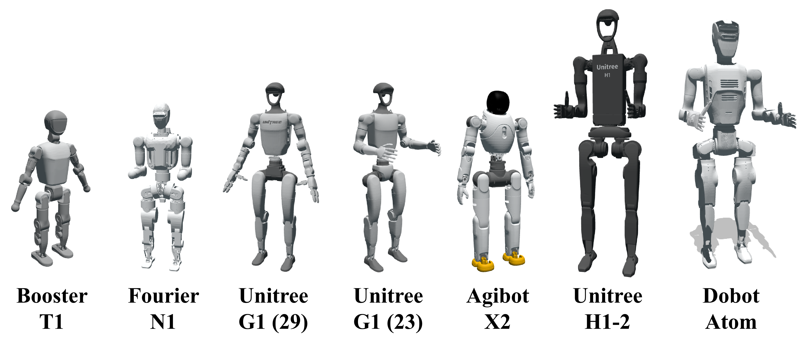
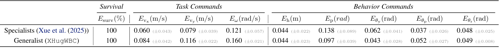
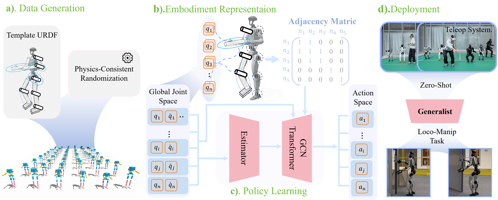

XHugWBC:Scalable and General Whole-Body
Control for Cross-Humanoid Locomotion
Cross-Embodiment Locomotion
Single Policy Control All Humanoids.
Generalist zero-shot generalization across seven humanoids
with diverse DoFs, dynamic characteristics, and morphological structures.
Cross-Embodiment Teleoperation
Whole-Body Teleoperation. Real-time teleoperation of diverse humanoid robots using a single policy
driven by human teleoperator.
Cross-Embodiment Loco-Manipulation
H1-2 Clean up the Toys
G1 Clean up the Toys
G1 Open Door
G1 Open Door
Long-Horizon Loco-Manipulation. The robot first walks toward the box on the right and bends to grasp the plush toy. Next, it opens the door with the other hand, walks through, stops in front of the basket, squats, and places the toy inside, then neatly arranges the toys outside the basket.
Real-World Robots Introduction
Simulation Experiment
Cross-Embodiment Parallel Training
Zero-shot Specific Embodiment Visualization
Robot Introduction in the Simulation Experiment
Experiments Results

Comparing Training Curves of the Fine-tuned Policies with the Generalist Policy and Specialist Policies

Generalist Average Command Tracking Errors and Survival Rates, Aggregated Across
All Robots, Compared with Specialist
Abstract
Method
XHugWBC Framework: 1). physics-consistent morphological randomization yields diverse humanoid embodiments, 2) unified state–action representation with semantic alignment across different robots, 3) graph-based policy for cross-humanoid control.